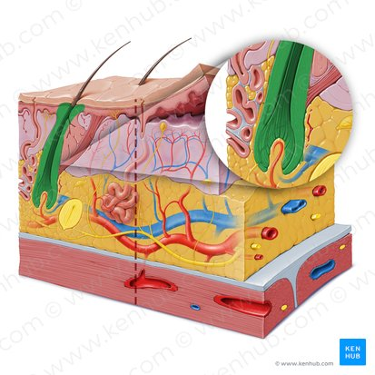

PELO
Los pelos son estructuras cornificadas filamentosas que crecen fuera de la piel y cubren la mayor parte de la superficie corporal. Varias áreas del cuerpo como las palmas de las manos, las plantas de los pies, la superficie flexora de los dedos y partes específicas de los órganos reproductores masculinos y femeninos están desprovistas de pelos. Los pelos son importantes para la detección, la termorregulación, la protección contra lesiones y la radiación solar.

Hay dos tipos principales de pelos: vellosos y terminales. Los pelos vellosos no se proyectan más allá de sus folículos en algunas de las áreas, sin embargo, son cortos y estrechos y cubren la mayor parte de la superficie del cuerpo. Este tipo de pelo se observa con mayor facilidad en niños y mujeres adultas. Los pelos terminales son más largos, más gruesos y más pigmentados. Se observan principalmente en hombres, pero también en las regiones axilar y púbica de ambos sexos.>
pagina principal